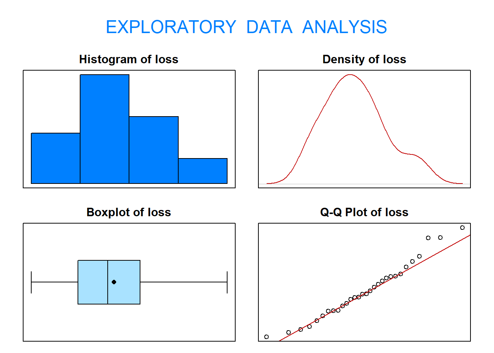
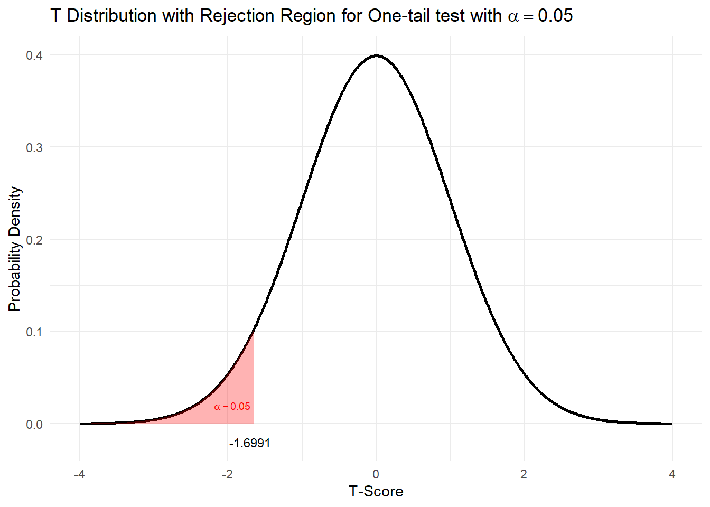

3 Example 1: The 5 Steps of Hypothesis Testing
An experiment was conducted to investigate how the resistance of rubber to abrasion is affected by the hardness of the rubber and its tensile strength. The data come from Hand et al. (1994, Data Set #6, Abrasion Loss) and are stored in the data frame Rubber of the MASS package. The abrasion loss is measured in grams/hour; the hardness, in degrees shore; and the tensile strength, in \(kg/cm^2\). Use the five-step procedure to test whether \(\mu < 170\) for abrasion loss (loss) with 95% confidence.
To open this data file, type:
This will assign the data to the object RUBBER. To view the data, type
into the script file and running that line by either placing the cursor on the line and pressing Ctrl and Enter, or by clicking on the Run button in the top-right corner of the script file. The data will then appear in the Console window below.
A spreadsheet of the data can be viewed by typing:
but note that you will need to close this window before trying to excute any further commands. The spreadsheet can also be viewed by clicking on the RUBBER object in the Environment (top right of the screen).
3.1 Verifying normality
To solve this problem, start by verifying the normality assumption of the data using
exploratory data analysis (EDA()).

## Size (n) Missing Minimum 1st Qu Mean Median TrMean 3rd Qu
## 30.000 0.000 32.000 113.250 175.433 165.000 173.536 220.500
## Max Stdev Var SE Mean I.Q.R. Range Kurtosis Skewness
## 372.000 88.085 7759.013 16.082 107.250 340.000 -0.522 0.433
## SW p-val
## 0.505Based on the graphical output from the function eda(), it is not unreasonable to assume
that abrasion loss follows a normal distribution. Now, proceed with the five-step procedure.
3.2 Step 1 - Hypotheses
To test if mean abrasion loss is less than \(170\), the hypotheses are:
\[H_0 : \mu = 170 \quad \text{verses} \quad H_1 : \mu < 170\]
This is a one-tail test as as we want to know how different the loss is from a mean of 170 (specifically less then) rather than just if it is different which would give the two-tail hypotheses \(H_0 : \mu = 170\) versus \(H_1 : \mu \neq 170\).
3.3 Step 2 - Choosing a Test Statistic
The test statistic chosen is \(\bar{X}\) because \(E[\bar{X}] = \mu\).
## [1] 175.4333The value of this test statistic is \(\bar{x} = \frac{\sum^n_{i=1}x_i}{n} = 175.4333\)
We have this as our test statistic because we want to evaluate the mean value.
We will determine the probability of obtaining that test statistic (sample mean) when the null hypothesis is true. We do this with standardisation and the probability is called the p-value which we will find soon.
The standardized test statistic under the assumption that \(H_0\) is true is distributed \(\frac{\bar{X}−\mu_0}{S/\sqrt{n}} \sim t_{30-1}\).
3.4 Step 3 - Hypothesis Test Calculations
3.4.1 Finding your Rejection Region
Because the standardized test statistic is distributed \(t_{29}\) and \(H_1\) is a lower one-sided hypothesis, the rejection region is the \(t_{obs} \leq t_{0.05; 29}\)
From the statistical tables, the t-value that corresponds to our significance level (critical value), \(t_{0.05; 29} = −1.6991\). Remember this is negative because we are discussing the lower tail of the t-distribution.
This same t-value can be found using R:
## [1] -1.699127Graphically the rejection region is as follows:

The rejection region is the area in which we would reject our null hypothesis. The critical value is the t-Value that corresponds to p=0.05, and hence is the top limit of our rejection region.
The probability of observing our test statistic (our sample mean) under the null hypothesis is the p-value.
To reject a null-hypothesis in this case we need our standardisd test statistic to be less than our critical value and hence our p-value < 0.05
3.4.2 Finding your standardised test statistic and p-value
Our standardised test statistic = \(\frac{\bar{X}−\mu_0}{S/\sqrt{n}} = \frac{175.4333−170}{S/\sqrt{n}}\). From our data set in R we can obtain \(S\) and \(n\):
## [1] 88.08526## [1] 30This gives our standardised test statistic \(t_{obs}=\frac{\bar{X}−\mu_0}{S/\sqrt{n}} = 0.3378\):
## [1] 0.3378478The p-value that corresponds to our standardised test statistic, \(P(t_{29} \leq 0.3378)\) is:
## [1] 0.6310443Graphically this could be shown:

Our standardised test statistic is greater than the critical value and outside our rejection region. Hence our p-value is greater than \(\alpha\)
3.5 Step 4 - Statistical Conclusion
To draw our conclusions we need to consider our rejection region:
Is our standardised test statistic inside the rejection region? Is our p-value smaller than 0.05?
QUESTION: Do we reject our null hypothesis?
I. From the rejection region, we fail to reject \(H_0\) because the standardised test statistic is greater than the critical value and hence outside the rejection region i.e \(t_{obs} = 0.3378 > -1.6991\).
OR
- From the p-value, we fail to reject \(H_0\) because the p-value\(0.631 > 0.05\).
Whichever method we use, we fail to reject \(H_0\).